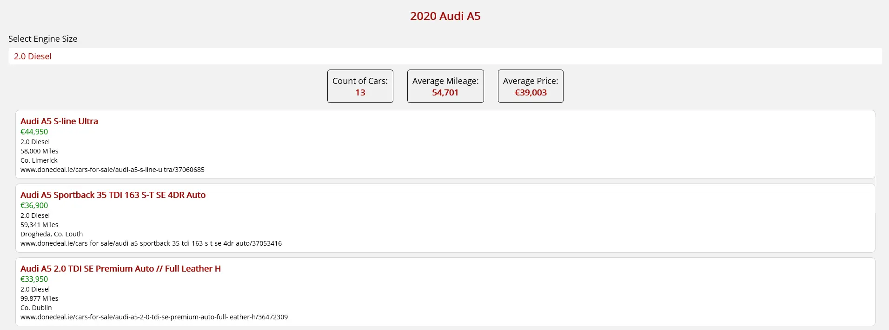
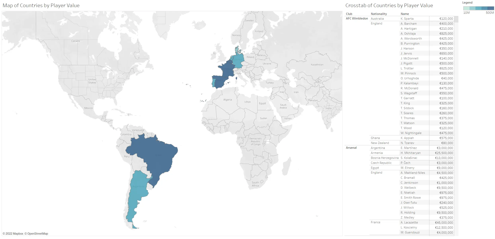
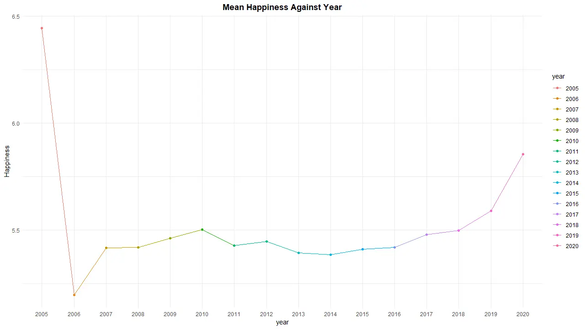
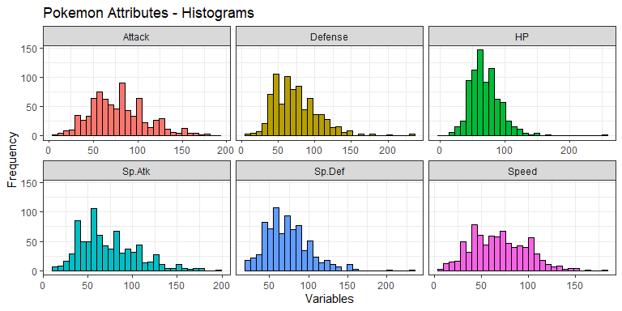
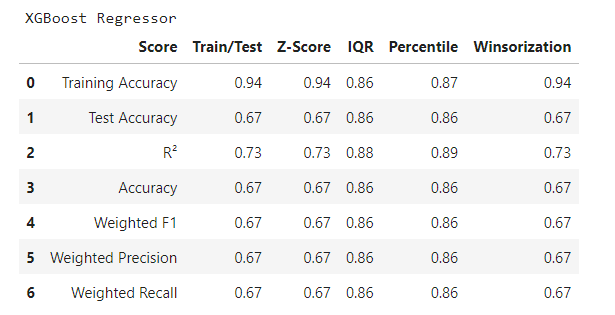

About
Hi, my name is Jack and this is my portfolio.
I am currently working as a freelancer, specifically as a business intelligence expert for the European Commission in Brussels. My main tasks include
creating dashboards, designing database schemas, and using the Power Platform to streamline processes. Prior to this, I worked as a data analyst for Eli Lilly in Cork, where I focused on creating automated python and Excel VBA solutions to improve productivity.
I also created numerous Power BI dashboards to monitor and track key performance indicators.
As such, I have a strong background in business analytics and software development, with a particular interest in using data to drive decision making and improve business processes.
In terms of eduction I have a BSc in Contemporary Software Development from Atlantic Technological University, a MSc in Business Analytics from the University of Limerick and a BSc in Financial Mathematics from the University of Limerick.
The BSc in Contemporary Software Development was a one year course which I completed to upskill in areas relating to software development. The MSc in Business Analytics I completed to gain a deeper understanding of data analytics and its applications in business. The BSc in Financial Mathematics was a four year course which I completed to gain a strong foundation in mathematics and its applications in finance.
During this BSc I developed heavily in Java, Python, R and MATLAB, which started my interest in programming.
My main interests include boxing, archery and Formula 1. I started boxing in March 2025, and have since maintained a consistent training routine. Archery has been an interest of mine for the past few
years, and I also have my own recurve bow and was elected as the
public relations officer for my university's archery club. Formula 1 has become my most recent
interest, and my favourite driver is Charles Leclerc!
Education
Bachelor of Science in Contemporary Software Development
Atlantic Technological
University
|
2023 - 2024
3.60 QCA
|
- Relevant Modules: DevOps Pipelines; Cross Platform Development; Software Processes; Software Development.
- Completed this 1 year BSc in order to upskill in areas relating to Software
Development.
Master of Science in Business Analytics
University of Limerick
|
2021 - 2022
3.76 QCA
|
- Relevant Modules: Machine Learning and Applications; Database Systems; Statistics for Data Analytics;
Big Data Visualisation.
- Completed a project in Python to predict housing prices in California. Used regression models,
SVM, GNB and
random forests.
- Completed an econometrics project using R to determine if GDP per capita could determine a
Country's happiness. Used
a linear regression model to determine that the log of GDP per capita, combined with social
support and life expectancy
were the most accurate indicators to determine happiness.
Bachelor of Science in Financial Mathematics
University of Limerick
|
2016 - 2021
2.77 QCA
|
- Relevant Modules: Computer Software; Advanced Data Modelling; Statistical Inference; Operations
Research; Stochastic Processes; Partial Differential Equations.
- Completed my final year thesis on: “Mathematical modelling of change of phase (Stefan) problems
with partial differential equations”.
- Completed a project in R to analyse Pokémon. Used standardization techniques, correlation plots
and K-Means clustering.
- Completed a time series project in R to predict average income per person in Ireland. Used
Box-Cox power and log transformations to create an ARIMA model.
Leaving Certificate
Crescent College Comprehensive
|
2010 - 2016
|
- Subjects included: Higher Mathematics, English, Applied Mathematics, Business & Technical
Graphics.
- Elected as a school prefect, which allowed me to attend and assist at out of hours events.
Projects
Click on an image to see the full project
Spotify Statistics
Python &
&
Google Cloud
|

Summarizing cars for sale on DoneDeal
.NET MAUI &
C#
|

2018 Premier League Player Values
Tableau
|

Does GDP Affect Happiness?
R & LaTeX
|

Identifying which Pokemon exhibit similar characteristics
RMarkdown
|

Analysing average income per person in Ireland with respect to year from 1950 to
2019
R & LaTeX
|

Predicting house prices in California
Python &
Jupyter
Notebook
|

Experience
Business Intelligence Expert
European Commission
|
|
Apr 25 - Present
Ongoing
|
- Contracted with DG REGIO to analyze data using Python, build interactive dashboards, and develop Power
Apps to help teams track the progress of various programs.
- Set up GitHub Actions to streamline development workflows and ensure code complies with best practices
and industry standards.
Data Analyst
Eli Lilly
|
|
Sept 22 - Mar 2025
2 yr 7 mos
|
- Created an Excel VBA tool integrated with Visio to automate organizational chart generation, eliminating the need for external contractors and saving the equivalent of 5,000 hours annually.
- Developed a Power BI dashboard for a Finance Hub within Europe to track product sales against allocations, leading to an estimated $1M increase in annual sales.
The dashboard’s success prompted its replication across multiple European Hubs.
- Built a PowerApp for manufacturing sites to manage and approve target transfers, with data securely stored in SharePoint and compliance ensured through Power Automate HTTP requests for
item-level access. This standardized and streamlined the tracking of financial and headcount transfers.
- Created a SARIMAX forecasting model in Python using AWS SageMaker to predict monthly meeting volumes for the Meetings and Congress Team. Integrated the data pipeline with S3 and Power BI to
aid strategic analysis.
- Developed Excel VBA solutions to automate recurring control checks, reducing processing time from 20-30 minutes of manual effort to approximately 0.8 seconds per check.
FINANCIAL SERVICES INTERN
Amesto Global
|
|
Feb 19 - Dec 20
1 yr 11 mos
|
- Initially began as an 8-month cooperative college placement, but was extended allowing the possibility to
contribute while also attending college.
- Responsible for a U.S.-based herbal supplements company’s operations in the European region.
Primary tasks included managing logistics, resolving conflict, reconciling multi-currency bank accounts,
reconciling accounts payable and receivable, preparing summary reports, and liaising with distributors.
- Other obligations included loading employee expenses for an international client, handling
bills and expenses for multi-industry clients using Xero,
manipulating and transforming related excel sheets and creating business plans with
presentations using MS Word and PowerPoint.
- Gained valuable experience of the finance industry, adding practical knowledge to academic
theory.
SALES ASSOCIATE
TK Maxx
|
|
Jun 17 - Sept 19
2 yrs 4 mos
|
- Developed time management, customer service and communication skills.
Skills
|
R |
|
LaTeX |
|
Python |
|
|
Jupyter Notebook |
|
Tableau |
|
Power BI |
|
SQL |
|
Excel |
|
Java |
|
MATLAB |